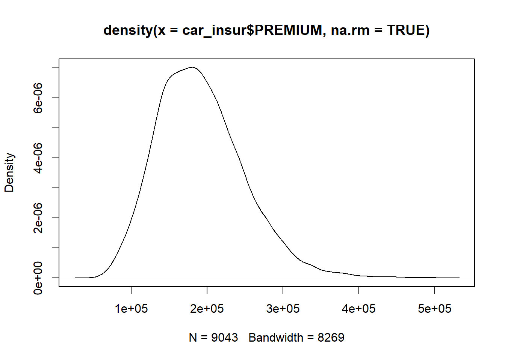
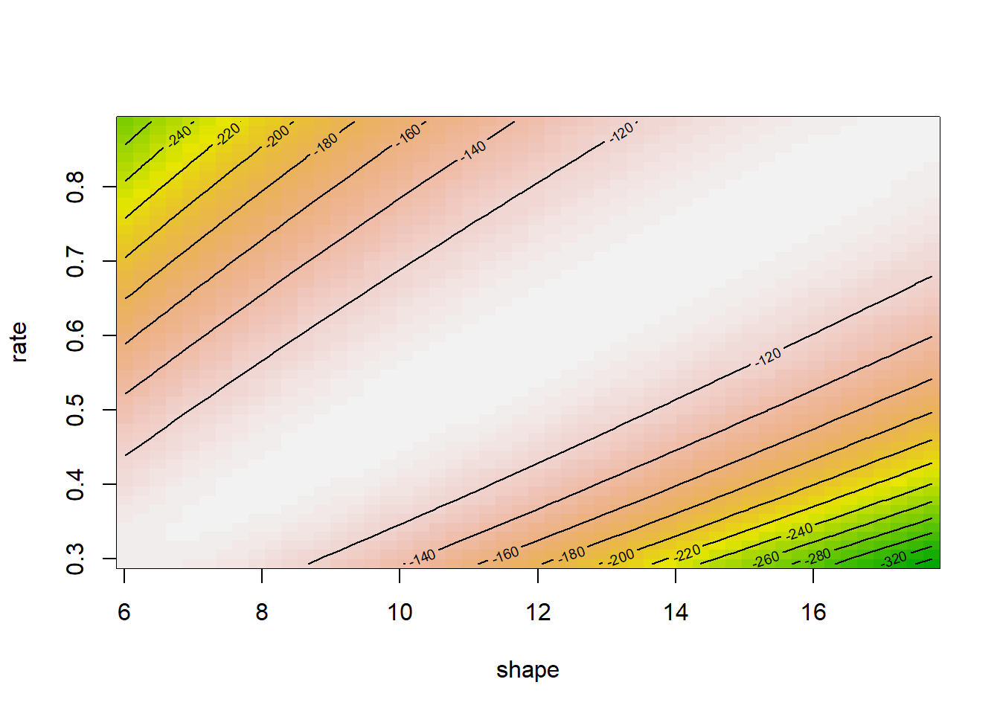
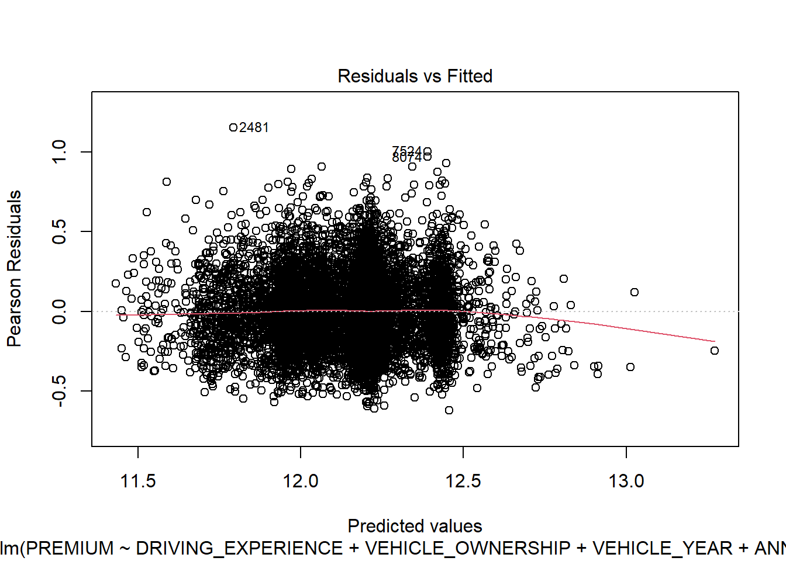
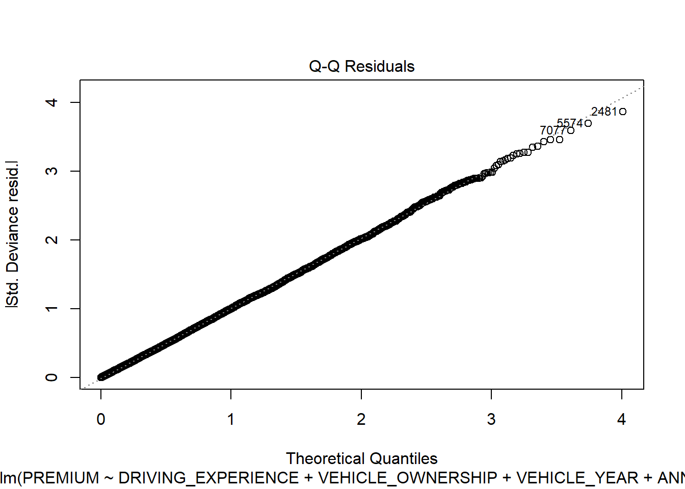
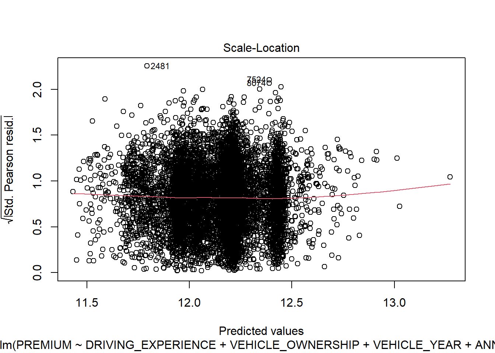
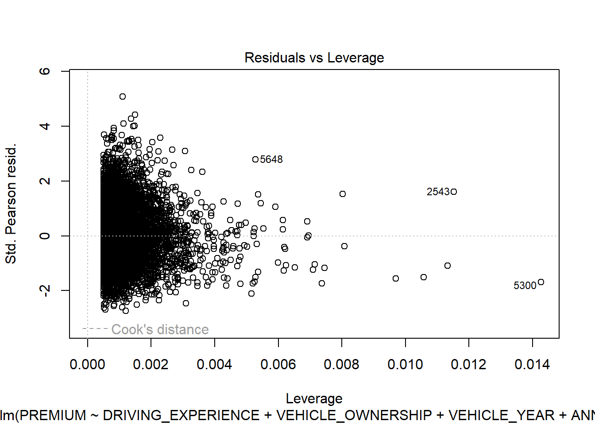

Ebben a fejezetben részletesen áttekintjük az általánosított lineáris modellek elméletét és gyakorlati kódolását R-ben. A fejezet az elméleti áttekintéssel kezdődik. Külön hangsúlyt fektetünk a biztosítási esetekre.
5 Általánosított lineáris modellek
5.1 Lineáris modellek visszatekintő
A klasszikus lineáris modellek leginkább akkor használhatók, ha a függő változó normális eloszlását megközelítőleg normálisnak feltételezzük, a folyamat pedig valamilyen lineáris struktúrával közelíthető.
Legyen tehát \(y_1, y_2, \dots y_n \in Y \sim N(\mu, \sigma_y^2)\) függő változó és legyen \(x_{np} \in X^{n \times p}\) prediktor mátrix, amelyre teljesül, hogy \(y_i=\beta_0+\sum_{j=1}^p \beta_j x_{ij} + \epsilon_{i}\), valamint \(\epsilon \sim N(0,\sigma_{\epsilon}^2)\). \(\beta\) koefficiensek becslését a \(\sum \epsilon^2\) hibanégyzetösszeg minimalizálása adja.
A feladat megoldásához rögzítsük, hogy \(E(\epsilon)=0\), valamint \(Var(\epsilon)=\sigma_{\epsilon}I_n\), ahol \(I_n\) egy \(n\times n\) méretű diagonális mátrix. Célfüggvényünk a következő:
A megoldáshoz szükséges, hogy \((\mathbf{X}^T \mathbf{X})^{-1}\) determinánsa nem lehet nulla. Ha az így lenne, akkor tökéletes multikollinearitást jelentene. Az egyenlet megoldása numerikus módszereket igényel, azért hogy egy nagy mátrix inverzét is gyorsan ki tudja számolni a számítógép. Ha \(\hat{\beta}\) vektor már rendelkezésre áll \(\hat{\beta_0}\) becslés már könnyen előállítható:
\(\sigma^2\) az \(\epsilon_i\) rezidiumok varianciája.
Ezzel az eljárással az approximációs feladatok azon része, ahol a kezdeti feltételek teljesülnek megoldhatók, a becslések torzítatlansága mellett.
5.2 Modellspecifikáció
5.2.1 A modellek felírása
A következő feltételezések az általánosított modellekben is élnek:
Eloszlásokra vonatkozó feltétel: fel tennünk, hogy \(x_i\) és \(y_i\) függetlenek, és \(y_i\) eloszlása tagja az exponenciális eloszláscsaládnak\(E(y_i | x_i)=\mu_i\) feltételes várható értékkel, és lehetőleg egy közös \(\phi\) skálaparaméterrel.
Szerkezetre vonatkozó feltétel: \(\mu_i\) becslése függ az \(\eta_i=z_i^T\beta\) lineáris prediktortól mégpedig a következő módon: \(\mu_i=h(\eta_i)=h(z_i^T\beta)\) módon. Ennek inverze pedig \(\eta_i\) szerint felírva pedig
\[
\eta_i=g(\mu_i)
\]
ahol,
h = egy simító függvény
g = a link függvény, ha h inverze
\(\beta\) = ismeretlen paramétervektor
\(z_i\) = magyarázó változó vektora amely egy megfelelő \(z_i=z(x_i)\) transzformáció útján állítható elő.
Az általánosított lineáris modell három komponensből áll:
exponenciális eloszláscsalád
link függvény
magyarázó változók transzformált vektora
Az exponenciális családba tartozó eloszlások általános alakja
Minden exponenciális eloszláscsaládba tartozó eloszlás felírható a következőképpen:
\(b(\cdot)\) és \(c(\cdot)\) = az adott eloszláshoz tartozó specifikus paraméterek
\(\omega_i\) = súly. Nem csoportosított (súlyozatlan) adatok esetén \(\omega_i=1\)\(\forall i\), míg súlyozott esetben \(\omega_i=n_i\), ahol \(n_i\) a megfigyelések száma az adott csoportban. Természetesen arányként is kifejezhető.
Az eloszláscsalád legfontosabb tagjai: normális, binomiális, Poisson, gamma és inverz gamma eloszlások.
A \(\theta\) természetes paraméter a várható érték egy függvénye \(\theta_i=\theta(\mu_i)\), amit az eloszlásra vonatkoztatva számítunk a következőképpen: \(\mu=b^{'}(\theta)\).
A függő változó varianciája következőképpen alakul:
ahol \(\upsilon\) szinten az adott függvény specifikuma mégpedig a \(\upsilon(\mu)=b^{''}(\theta)\) formában.
Látható tehát, hogy a várható érték \(\mu=h(z^{'}\beta)\) szerkezetét minden esetben egy specifikus varianciastruktúra követi.
5.2.2 A link függvény
A megfelelő link függvényt minden esetben az eloszláshoz kell választani, azonban minden eloszláshoz rendelhető egy kanonikus alak (a lehető legegyszerűbb formában felírható alak). A természetes link függvények \(\theta\) természetes paramétert kötik össze közvetlenül a lineáris prediktorral:
\[
\theta=\theta(\mu)=\eta=z^{'}\beta
\]
A leggyakrabban alkalmazott link függvények
Minden eloszláscsalád rendelkezik saját link függvénnyel. A leggyakoribbak:
Normális eloszlás
\[
\eta = \mu
\]
Poisson eloszlás
\[
\eta=log(\mu)
\]
Binomiális eloszlás
\[
\eta=log \left( \frac {\mu} {1-\mu} \right)
\]
Minden eloszlástípushoz megtalálható a linkfüggvény a Wikipedia oldalán.
A magyarázó változók vektorát illetően nincs igazán változás a klasszikus lineáris modellekhez képest: legtöbbször a modell tartalmaz egy konstanst (\(\beta_0\)), ami a főátlagot jeleníti meg, tehát z a következő \(z(1,\omega)\) formát ölti. Ebbe a folytonos változók közvetlenül (transzformáció nélkül) beépíthetők, míg a kategorikus változók esetében szükség lehet transzformációra, ha nem bináris változóról van szó, hanem multinominálisról (ez az ún. hot-encoding eljárás).
5.2.3 Idővariáns megfigyelések és exogén változók
A GLM modell alapértelmezetten minden megfigyelést azonos súlyúnak tekint, ami a legtöbb modell esetén nem jelent gondot. Biztosítási gyakorlatban azonban sokszor előfordul, hogy a megfigyelés (szerződés) tört évre, vagy egy évnél hosszabb időre vonatkozik. Ebben az esetben a modell nem tekintheti teljes értékűnek a megfigyelést. A töredékes megfigyelés sokszor más változókat is érint: például ha a várható káresemények száma egy év alatt 1, akkor az az ügyfél, aki csak októberben szerződik a tárgyévi káresemény száma 0,25 miközben a kockázata természetesen nem változik! A tört éveket kétféle módon vehetjük figyelembe:
Az adatokat évesítjük, azaz leosztunk a szerződés hosszával. Gyakorisági (Poisson) modelleknél gyakran alkalmazott eljárás. Ilyenkor a kockázatviselés hosszát az \(\omega\) súlyvektorban rögzítjük.
Fix, rögzített változóként vesszük figyelembe a kockázati kitettséget (offset).
Árazáskor előfordulhatnak olyan tételek, amelyek a modellek kívül határozódnak meg, de a modellben figyelembe kell őket venni (exogén változók). Ilyen lehet például egy alapköltség, ami területenként eltérő és mindenképpen (rögzítetten) hozzáadódik a díjhoz. Továbbá ilyenek azok a tételek is, amelyek a díjat csökkentik, tipikusan a bonus-malus kategóriák. Ezekhez a modell nem becsül \(\beta\) koefficienst, de tudnia szükséges, hogy ezek a tételek még hozzáadódnak a kalkulált díjhoz. Elnevezésük offset.
A kitettségről és az offset-ről bővebben a 6. fejezetben lesz szó.
5.3 Modellek folytonos eloszlású függő változóval
5.3.1 Normális eloszlás
Feltételezve, hogy \(y \in Y \sim N(\mu, \sigma^2)\) a természetes link függvény választása a klasszikus lineáris modellt implikálja:
\[
\mu=\eta=z^{'}\beta
\]
Természetesen vannak esetek, mikor a nemlineáris modell jobban illeszkedik:
\[
h(\eta)=\eta^2
\]\[
h(\eta)=log(\eta)
\]
\[
h(\eta)=exp(\eta)
\]
Ezek a nemlineáris alakok is hatékonyan kezelhetők az általánosított modell környezetében.
5.3.2 Gamma eloszlás
A gamma eloszlás egy hasznos eloszlás olyan regressziós vizsgálatok esetén, amely egy folytonos valószínűségi változót közelít, amely \(\mathbb{R}^{+}\) tartományon értelmezett. A sűrűségfüggvény:
\[
f(y)= \frac {\beta^{\alpha}} {\Gamma(\alpha)}e^{-\beta y}y^{\alpha-1}
\] ahol \(\alpha, \beta>0\).
Ismert, hogy a várható érték \(\mu=\alpha/\beta\)
A kanonikus függvény (vegyük a logaritmust, majd alakítsuk vissza):
Az \(\alpha\) paraméter ritkán ismert. Ne felejtsük el, hogy a kanonikus forma a lehető legegyszerűbb alakot takarja, és ha \(\alpha\) ismeretlen, akkor célszerű az \(\alpha=1\) értéket használni. Ekkor
\[
\theta=\eta=-\frac{1} {\mu}
\]
Vagyis a helyes kanonikus link függvény az inverz.
5.4 Additív és multiplikatív struktúrák
Mint ismeretes a GLM struktúra a \(g(\mu_i)=\beta_0+\sum_{j=1}^p \beta_j x_{ij}\) formát ölti, ahol \(g(\cdot)\) a link függvényt jelöli. A javasolt link függvények jó matematikai tulajdonságokkal rendelkeznek (gyors és biztosabb konvergencia az MLE becslés során), gyakorlati szempontból, különösen a biztosítási árazás során sokszor előnyösebb lehet más link függvényt alkalmazni. Ezt bizonyos keretek között szabadon megtehetjük anélkül, hogy a feltételeket megsértenénk, de vállalnunk kell annak a kockázatát, hogy az MLE becslés nem biztos, hogy sikeres lesz (jó adatstruktúra és modellspecifikáció esetén erre azonban kicsi az esély).
Az árazás során a multiplikatív modellek jellemzően jobban interpretálhatók, hiszen %-os változást becslünk velük így megszabadulhatunk a pénzbeli értékektől (például “értelmesebb” azt mondani, hogy az ár 10%-kal drágul, mint azt hogy 2381Ft-tal). A multiplikatív modellszerkezet link függvénye a log link. A Poisson eloszlásnál eleve ez a javasolt link függvény, míg más eloszlásoknál a logit link az alapértelmezett.
Fontos! A log nem azonos a logit függvénnyel!
A gamma és az inverz Gauss eloszlásoknál a javasolt link függvények lecserélhetők a log link függvényre. Az említett eloszlásoknál szükséges megkötések a log link esetén is teljesülnek.
A log link (\(\mathbf{X}\beta = \ln(\mu)\)) és a logit függvény (\(\mathbf{X}\beta = \ln \left(\frac {\mu} {1-\mu} \right)\)) nem azonos, azt lecserélni nem szabad!
\[
\ln(\mu) \neq \ln \left(\frac {\mu} {1-\mu} \right)
\] A logit esetén rendkívül fontos, hogy a binomiális eloszlásnak megfelelve a eredmény szigorúan 0 és 1 közé essen, ezt a log link nem teljesíti.
A gamma és az inverz gauss eloszlások esetén a javasolt link függvény lecserélhető, hiszen mindkét eloszlásnál a követelmény az, hogy \((0, + \infty)\) tartományon legyen értelmezve a függő változó, és ezt a log link is teljesíti. Ezért a multiplikatív modellszerkezet alkalmazása a legtöbb biztosítási modellezés során javasolt:
Ismeretes, hogy minden nevezetés eloszlás legtöbbször valamilyen helyparaméterrel és skálaparaméterrel adott. Amennyiben sejtjük, hogy milyen eloszlással van dolgunk, de nem ismerjük egyetlen paraméterét sem, viszont van véletlen mindevételből származó i.i.d. mintánk, akkor becslés adható az ismeretlen paraméterek értékére.
Legyen tehát \(y_1, y_2, \dots, y_n \in Y\) egy ismert eloszlásból, de ismeretlen \(\theta\) paraméterrel. Ekkor a likelihood függvényünk:
\[
L_Y(\theta,y)=f_y(y, \theta)
\]
Vagyis ismervén a mintánkat, és sejtvén a háttéreloszlást, úgy milyen eséllyel kaptuk meg azt a véletlen mintát, ami éppen a birtokunkban van?
A likelihood függvények egy tulajdonsága
A likelihoodokat mindig a sűrűségfüggvényekből becsüljük, azonban \(L_Y(\theta,y) \neq 1\)!
\(\theta\) paraméternek végtelen sok értéke lehetséges (ez minta konstellációról minta konstellációra változik) azonban minden lehetséges \(\theta\) értékhez rendelhető egy valószínűség. Ismervén legalább egy mintát, úgy maximalizálva a valószínűségeket, megállapítható \(\theta\) legvalószínűbb értéke.
Minden \(y_i\)-hez rendelhető egy egyedi \(L_y(\theta,y_i)\) likelihood függvény, ami praktikusan \(y_i\) mintába kerülési esélyét mutatja meg. Ezért
\[
L_Y(\theta,y)=\prod_i^n L_Y(\theta,y_i)
\]
Kihasználva a logaritmus függvény monotonitásának azonosságát a log likelihood függvényt:
Azt a \(\theta\) értéket választjuk, amely mellett a kapott mintánk a lehető legnagyobb valószínűség mellett előáll. Ez egy maximalizálási feladatot indukál, ami feltételezi a likelihood függvény differenciálhatóságát \(\theta\) szerint. A likelihood függvény első deriváltja a score:
Az információ megmutatja, hogy egy becslésünk \(\theta\) paraméterre vonatkozóan mekkora információt tartalmaz, azaz mennyire megbízható. Ha \(I_Y\) értéke alacsony, akkor becslésünk kevésbé jó. Fontos tudni, hogy R az Fisher információ inverzét közli.
5.6 Regressziós kioefficiensek becslése
A klasszikus lineáris regresszió megoldási módja az általánosított modellek esetén nem járható út. Ugyanakkor a likelihood elv használatával torzítatlan becslések adhatók az ismeretlen koefficensekre.
Legyen \(y_1, y_2, \dots, y_n\) függő változó és \(z_1, z_2, \dots, z_n\) dizájn vektor (vagy az ezzel egyenértékű \(x_1, x_2, \dots, x_n\) kovariánsok). Egy \(E(y_i|x_i)=\mu_i=h(z_i^{'}\beta)\) feltételes várható érték feladatban találhatő \(\beta\) vektor maximum likelihood becslése (MLE) a likelihood vektor maximalizálásán alapul.
Először tegyük fel, hogy \(\phi\) skálaparaméter ismert. Miután ez a paraméter a likelihood része, ezért kanonikus alakban \(\phi=1\) értékre állítható.
Az általánosított sűrűségfüggvény log-likelihood alakja a következő:
Használjuk a car_insur adatbázist. Biztosítási adatokban leggyakrabban a díjak követnek Gamma eloszlást, mivel ha nem is a nullánál, de alulról mindenképpen korlátos adatokról van szó, amelyek gyakran balra erősen ferdék. Az adatbázisban sajnos nem szerepel a kiszabott díj így készítsünk egy szintetikus gamma eloszlású díj változót.1.
library(dplyr)
Warning: a(z) 'dplyr' csomag az R 4.6.1 verziójával lett fordítva
Kapcsolódás csomaghoz: 'dplyr'
The following objects are masked from 'package:stats':
filter, lag
The following objects are masked from 'package:base':
intersect, setdiff, setequal, union
load("data/car_insur.RData")# Beállítjuk a véletlenszám-generátort a reprodukálhatóságértset.seed(42)car_insur <- car_insur %>%mutate(# 1. Alapdíj (Base Rate) pl. 50 000 Ft / tetszőleges pénznembase_rate =50000,# 2. Multiplikatív kockázati tényezők (Relatív súlyok)# Vezetési tapasztalat szorzója (a kezdők lényegesen többet fizetnek)exp_factor =case_when( DRIVING_EXPERIENCE =="0-9y"~1.8, DRIVING_EXPERIENCE =="10-19y"~1.3, DRIVING_EXPERIENCE =="20-29y"~1.0, DRIVING_EXPERIENCE =="30y+"~0.8,TRUE~1.0 ),# Évjárat szorzója (újabb autó = drágább alkatrész/javítás)year_factor =if_else(VEHICLE_YEAR =="after 2015", 1.25, 1.0),# Baleseti múlt és szabálytalanságok (minden egyes eset növeli a díjat)accident_factor =1+ (PAST_ACCIDENTS *0.15) + (SPEEDING_VIOLATIONS *0.05),# Éves futásteljesítmény hatása (kisebb korrekció)mileage_factor =1+ (ANNUAL_MILEAGE /100000),# 3. A "valódi" elméleti várható érték (mu)mu_true = base_rate * exp_factor * year_factor * accident_factor * mileage_factor,# 4. Reális zaj hozzáadása Gamma eloszlással:# A Gamma(shape, scale) várható értéke = shape * scale.# Ha shape = 10 és scale = mu_true / 10, akkor az átlag épp mu_true lesz,# de lesz benne egy reális szóródás/zaj!PREMIUM =rgamma(n =n(), shape =20, scale = mu_true /10) ) %>%# Eltávolítjuk a segédváltozókatselect(-base_rate, -exp_factor, -year_factor, -accident_factor, -mileage_factor, -mu_true)
Warning: There was 1 warning in `mutate()`.
ℹ In argument: `PREMIUM = rgamma(n = n(), shape = 20, scale = mu_true/10)`.
Caused by warning in `rgamma()`:
! NAs produced
plot(density(car_insur$PREMIUM, na.rm =TRUE))

A biztonság kedvéért ellenőrizzük, hogy valóban gamma eloszlásról van-e szó és becsüljük meg hozzá a paramétereit!
require(fitdistrplus) # szüksgés csomagok
A szükséges csomag betöltődik: fitdistrplus
Warning: a(z) 'fitdistrplus' csomag az R 4.6.1 verziójával lett fordítva
A szükséges csomag betöltődik: MASS
Kapcsolódás csomaghoz: 'MASS'
The following object is masked from 'package:dplyr':
select
A szükséges csomag betöltődik: survival
require(dplyr)premium_gamma_fit<-fitdist(na.omit(car_insur$PREMIUM), "gamma", method ="mme") # többféle becslési eljárás létezik, a momentum alapú (mme) általában egyszerűbb, ezért legtöbbször működikpremium_normal_fit<-fitdist(na.omit(car_insur$PREMIUM), "norm", method ="mme") # csak az összehasonlításhoz becsüljük meg a normális eloszlás paramétereitsummary(premium_gamma_fit) # a becsült paraméterek
Fitting of the distribution ' gamma ' by matching moments
Parameters :
estimate Std. Error
shape 1.102871e+01 1.712891e-01
rate 5.755029e-05 9.122131e-07
Loglikelihood: -111625.4 AIC: 223254.8 BIC: 223269
Correlation matrix:
shape rate
shape 1.0000000 0.9798426
rate 0.9798426 1.0000000
summary(premium_normal_fit)
Fitting of the distribution ' norm ' by matching moments
Parameters :
estimate Std. Error
mean 191635.97 606.8180
sd 57705.17 429.8687
Loglikelihood: -111970.8 AIC: 223945.6 BIC: 223959.8
Correlation matrix:
mean sd
mean 1.0000000000 0.0004894874
sd 0.0004894874 1.0000000000
gofstat(list(premium_gamma_fit, premium_normal_fit)) # illeszkedés vizsgálata a két eloszlásra, a GoF értékek közül a kisebb a kedvezőbb, mivel távolságokról van szó
fitdist(mtcars$mpg, "gamma") %>%llplot() # rajzoljuk ki a becslések likelihood kontúr ábráját

A gamma eloszlás feltételezését tehát elfogadhatjuk. Illesszünk GLM modellt az adatokra, a díjat magyarázzuk az összes változóval! A legfontosabb, hogy az eloszláscsalád definiálásakor Gamma eloszlást adjunk meg (ügyeljünk a nagy kezdőbetűre). Az alábbi eloszláscsaládok kezeltek:
binomial(link = “logit”)
gaussian(link = “identity”)
Gamma(link = “inverse”) vagy Gamma(link = “log”)
inverse.gaussian(link = “1/mu^2”) vagy inverse.gaussian(link = “log”)
poisson(link = “log”)
quasi(link = “identity”, variance = “constant”)
quasibinomial(link = “logit”)
quasipoisson(link = “log”)
A link függvényt nem kötelező megadni, ha az alapértelmezett változat megfelelő. Bár matematikailag az inverz jelenti a kanonikus formát, az aktuáriustudományok gyakran inkább a log link függvényt alkalmazzák. Ennek több oka is van, amit érdemes megemlíteni:
A biztosítási tarifa számításánál a prediktorok hatásai inkább multiplikatívak, mintsem additív formát öltenek. Ennek jellemzően gyakorlati okai vannak, mert a modell könnyebben interpretálható (x%-kal magasabb kár).
Az inverz értékkel nem garantált a pozitív tartomány (bár nem valószínű, hogy az inverz esetén ilyen előfordulna).
Gyorsabb algoritmus a becslés során.
Összhangban van a többi aktuáriusi kockázati modellel.
require(dplyr)glm(data = car_insur, PREMIUM~., family =Gamma(link="log")) %>%summary()
Call:
glm(formula = PREMIUM ~ ., family = Gamma(link = "log"), data = car_insur)
Coefficients:
Estimate Std. Error t value Pr(>|t|)
(Intercept) 1.234e+01 2.534e-02 486.942 < 2e-16 ***
ID -1.549e-09 8.657e-09 -0.179 0.8580
AGE26-39 -8.439e-03 1.019e-02 -0.828 0.4076
AGE40-64 -7.338e-03 1.150e-02 -0.638 0.5233
AGE65+ -2.016e-03 1.342e-02 -0.150 0.8806
GENDERmale 7.200e-03 5.576e-03 1.291 0.1967
RACEminority -1.136e-02 8.404e-03 -1.351 0.1766
DRIVING_EXPERIENCE10-19y -2.694e-01 8.896e-03 -30.288 < 2e-16 ***
DRIVING_EXPERIENCE20-29y -5.247e-01 1.155e-02 -45.432 < 2e-16 ***
DRIVING_EXPERIENCE30y+ -7.425e-01 1.583e-02 -46.905 < 2e-16 ***
EDUCATIONnone 1.579e-02 7.625e-03 2.071 0.0384 *
EDUCATIONuniversity 2.203e-03 6.098e-03 0.361 0.7180
INCOMEpoverty -1.438e-02 1.118e-02 -1.286 0.1984
INCOMEupper class 2.460e-03 8.146e-03 0.302 0.7626
INCOMEworking class -5.451e-03 8.998e-03 -0.606 0.5447
CREDIT_SCORE -2.329e-03 2.778e-02 -0.084 0.9332
VEHICLE_OWNERSHIP 7.827e-03 6.328e-03 1.237 0.2161
VEHICLE_YEARbefore 2015 -2.218e-01 5.969e-03 -37.158 < 2e-16 ***
MARRIED -1.975e-03 6.075e-03 -0.325 0.7452
CHILDREN -9.619e-04 6.428e-03 -0.150 0.8811
POSTAL_CODE 1.045e-07 1.400e-07 0.746 0.4555
ANNUAL_MILEAGE 7.446e-06 1.144e-06 6.506 8.17e-11 ***
VEHICLE_TYPEsports car -5.641e-03 1.183e-02 -0.477 0.6335
SPEEDING_VIOLATIONS 2.975e-02 1.601e-03 18.585 < 2e-16 ***
DUIS 5.510e-03 5.004e-03 1.101 0.2709
PAST_ACCIDENTS 9.686e-02 2.021e-03 47.940 < 2e-16 ***
OUTCOME -1.055e-03 7.225e-03 -0.146 0.8839
---
Signif. codes: 0 '***' 0.001 '**' 0.01 '*' 0.05 '.' 0.1 ' ' 1
(Dispersion parameter for Gamma family taken to be 0.05157602)
Null deviance: 737.71 on 8148 degrees of freedom
Residual deviance: 422.33 on 8122 degrees of freedom
(1851 observations deleted due to missingness)
AIC: 196627
Number of Fisher Scoring iterations: 4
Sok változónk van, amelyek nem járulnak hozzá a becsléshez, ezért ezek a \(\beta_i\) nulla értéket vesznek fel, de legalábbis a \(H_0: \beta_i=0\) hipotézist nem lehet elutasítani. A legegyszerűbb módja annak, hogy csak a szignifikáns prediktorok maradjanak a modellben az, hogy valamilyen változószelekciós eljárást alkalmazunk. A legegyszerűbb (és egyben legdurvább) ilyen módszer a sep() (stepwise) algoritmus használata.
library(MASS)backward_gamma<-stepAIC(glm(data =na.omit(car_insur), PREMIUM~., family =Gamma(link="log")), direction ="backward", trace=0)summary(backward_gamma)
Call:
glm(formula = PREMIUM ~ DRIVING_EXPERIENCE + VEHICLE_OWNERSHIP +
VEHICLE_YEAR + ANNUAL_MILEAGE + SPEEDING_VIOLATIONS + PAST_ACCIDENTS,
family = Gamma(link = "log"), data = na.omit(car_insur))
Coefficients:
Estimate Std. Error t value Pr(>|t|)
(Intercept) 1.233e+01 1.359e-02 907.47 < 2e-16 ***
DRIVING_EXPERIENCE10-19y -2.725e-01 6.636e-03 -41.06 < 2e-16 ***
DRIVING_EXPERIENCE20-29y -5.254e-01 8.765e-03 -59.95 < 2e-16 ***
DRIVING_EXPERIENCE30y+ -7.396e-01 1.227e-02 -60.29 < 2e-16 ***
VEHICLE_OWNERSHIP 1.017e-02 5.652e-03 1.80 0.0719 .
VEHICLE_YEARbefore 2015 -2.233e-01 5.573e-03 -40.07 < 2e-16 ***
ANNUAL_MILEAGE 7.529e-06 9.470e-07 7.95 2.11e-15 ***
SPEEDING_VIOLATIONS 3.070e-02 1.517e-03 20.23 < 2e-16 ***
PAST_ACCIDENTS 9.733e-02 1.910e-03 50.95 < 2e-16 ***
---
Signif. codes: 0 '***' 0.001 '**' 0.01 '*' 0.05 '.' 0.1 ' ' 1
(Dispersion parameter for Gamma family taken to be 0.05153955)
Null deviance: 737.71 on 8148 degrees of freedom
Residual deviance: 422.93 on 8140 degrees of freedom
AIC: 196603
Number of Fisher Scoring iterations: 4
Ha már megvan a modellünk, akkor többféle diagnosztikát is lefuttathatunk a modell jóságának illeszkedésére. A modellszintű illeszkedést a deviancia indikátorok mutatják (lásd később). Itt most az illeszkedést egy másik vetületben értékeljük. Folytonos változók esetén a hibatagokra vonatkozó követelmények hasonlók, mint a klasszikus lineáris regresszió esetében: függetlenség, nulla várható értékű normális eloszlás. Ezeket legtöbbször vizuálisan is tesztelhetjük, mert ha csak nem sértettünk nagyon komolyan a modell előfeltételein, akkor az optimalizációs kritérium miatt a hibatagokra vonatkozó statisztikai követelmények szinte mindig teljesülnek.
plot(backward_gamma)




Látható, hogy a feltételek teljesülnek (elsősorban a QQ ábra vizsgálandó). Az output bevezet még két új mennyiséget:
Cook-távolság
Leverage-érték
5.7 Diagnisztikai mutatók
Az alapértelmezett diagnosztika elsősorban a hibatagokat és az illesztett értékeket vizsgálja. Ha a fenti feltételek teljesülnek úgy a befolyásos értékek azonosítása marad a feladat, mivel ezek az értékek torzíthatják a becsléseket. A befolyásos értékeket gyakran outliernek nevezik.
::: {callout-note title=“Az outlierekről”} A hagyományos statisztika oktatás során a kiugró, extrém értéket felvevő megfigyeléseknek általában negatív a konnotációja, és az eltávolítását javasolják a mintából. Ennek oka, hogy a klasszikus statisztika mindig az ismert eloszlásokon keresztül közelíti meg az adatokat. Mivel mintáról van szó, valamekkora eltérés a teoretikus eloszlástól tolerálható, ugyanakkor a nagyobb devianciák már valóban torzítják a becsléseket, különösen kis minta esetén. A napjainkban használatos nagyobb minták során egy-egy extrém értéket felvevő megfigyelés már tud illeszkedni a teoretikus eloszlás szélére, és nem jelent számottevő torzítást.
Gyakran előfordul azonban, hogy az eloszlás széle vastagabb, vagyis az ott található értékek bár jelentősen távol esnek az átlagtól, de nem számítanak ritka eseménynek. Ilyenkor valóban erős lehet a “húzóerő”, ami egy modell illesztett egyenesét az extrém értékek felé gravitálja. Ez azonban elsősorban csak akkor probléma, ha a függő változó feltételezett eloszlása nincs összhangban a tapasztalati eloszlással. Ilyenkor GLM modellt érdemes alkalmazni, ha egy exponenciális eloszlásra “ráhúzható” a minta eloszlásra.
Természetesen előfordulhat, hogy egyetlen ismert eloszlásra sem “húzható rá” a minta eloszlása. Ilyenkor több módszer is adódik:
Alkalmazzunk robusztus regressziót (GLM esetén is létezik), amely súlyozza a megfigyeléseket, például a leverage érték alapján (lásd lentebb).
Alkalmazzunk zsugorító (shrinkage), reguralizációs eljárást, amely nem a megfigyelést, hanem a prediktor súlyát szabályozza. Ilyen módszer a LASSO, a LARS, de alkalmazhatók a neurális hálók is. :::
5.7.1 Cook-távolság
A Cook-távolság egy meglepően hatékony mérték annak szemléltetésére, hogy vannak-e olyan outlier megfigyelések, amelyek erősen torzítják a modellt becsült paramétereit. A működési elv a következő:
Készítsük el a modellünket, amelybe minden megfigyelést bevonunk.
Vegyünk ki egy megfigyelést, majd futtassuk újra modellt.
Vizsgáljuk meg, hogyan változtak a becsült együtthatók értékei.
Minél nagyobb a változás, annál nagyobb hatást gyakorol a kivett megfigyelés a modellre.
Az elkészült modellen alkalmazzuk a cook.distance(model) függvényt, hogy megkapjuk a távolságokat.
5.7.2 Leverage érték
A Cook-távolság hátránya, hogy csak az elkészült modell birtokában lehet alkalmazni, hosszú adatbázisok esetén pedig sokáig tarthat az iteratív művelet, továbbá csak az egyes megfigyelésekre tud információt nyújtani. A leverage érték egy lépésben számolható és akár egész változóra is vonatkoztatható, és nem szükséges hozzá a modell számítása. AZ eljárás azon az elven alapul, hogy egy vektorban az átlagtól vett távolság alapján egy megfigyelés “elhúzza” az illesztett egyenest ettől a várható értéktől. Számítása a következő: legyen \(y_i=x_i^T\beta+\epsilon_i\) regressziós modell. Ekkor a leverage mátrix a következő:
Ekkor \(0\leq h_{ii} \leq 1\) a leverage érték (score). Minél nagyobb az értéke, annál erősebb befolyással bír az adott megfigyelés. Fontos megjegyezni, hogy a nagy leverage érték biztos nagy befolyással bír, de nem feltétlenül outlier.
5.8 Bináris és binomiális függő változók becslése
Legyen \(y:=\{0,1\}\) bináris függő változó, és tegyük fel, hogy \(E(y|x)=P(y=1|x)=\pi\), azaz a függő változó értéke meghatározható az x prediktor segítségével. Ez a \(\text{var}(y|x)=\pi(1-\pi)\) variancia struktúrát indukálja. Bináris és binomiális esetben a \(\pi\) valószínűséget közelítjük \(\eta=z^{'}\beta\) lineáris prediktorral egy \(\pi=h(\eta)\) vonatkozó függvénnyel és \(g(\pi)=\eta\) link függvénnyel.
A lineáris (normális eloszlást feltételező) GLM modellek alkalmazhatók lennének egy identitás link esetében, azaz \(\pi=\eta=z^{'}\beta\) formában. Miután azonban \(\pi\) egy valószínűség, ezért \(z^{'}\beta\) lineáris prediktornak a [0,1] tartományon kell maradnia \(\forall z\) esetben, ami komoly megkötéseket jelent \(\beta\) lehetséges értékeire nézve. Ezért szükségünk van az alábbi F monoton eloszlás függvényre:
\[
\pi=F(\eta)
\]
F értéke több formát is ölthet, ami meghatározza a következő modelleket is.
5.8.1 Probit modell
A modell általános alakha a következő:
\[
\pi=\Phi (\eta) = \Phi (z^{'}\beta)
\]
ahol \(\Phi\) a standard normális eloszlásfüggvény, ami garantálja, hogy \(\pi\) értéke a [0,1] sávban fog maradni.
A 0 és 1 közeli értékek kivételével az eloszlás szélein, a probit és a logit modellek hasonló eredményeket adnak.
Példa Probit és Logit modellek
Használjuk az ismert car_insur adatbázist továbbra is, és adjunk becslést arra, hogy lesz-e káreseménye az ügyfélnek! A kalkulált díjat ne használjuk, hiszen ezt a kockázat alapján számoljuk ki.
Amennyiben a probléma természete engedi, úgy a normális eloszlású függő változóra illeszkedő modell is használható (kerekítéssel) vagy, ha csak alacsony értékek fordulnak elő (0, 1, … q), akkor a multinominális modellek alkalmazandók.
Általánosságban a Poisson eloszlás alapú GLM modellek illeszkednek a legjobban.
5.9.1 Log-lineáris Poisson modell
A legegyszerűbb Poisson GLM, hiszen \(\text{log}(\mu)=\eta=z^{'}\beta\) és \(\mu=\text{exp}(\eta)\) link függvénnyel kapcsolódik a prediktorhoz. Fontos kikötés azonban, hogy ebben a modellben \(\mu\) várható érték és a magyarázó változók közötti dependencia multiplikatív! Amennyiben additív kapcsolatot sejtünk, hogy a lineáris modellre van szükségünk (azaz a link függvény állítsuk “identity” értékre).
Példa Poisson eloszlású GLM
Illesszünk Poisson modellt az adatokra a car_insur adatbázis PAST_ACCIDENTS változójára. Itt se használjuk a kikalkulált díjat.
glm(data=car_insur, PAST_ACCIDENTS~.-PREMIUM,family =poisson("log")) -> glm_pois_log # log link függvénnyelglm(data=car_insur, PAST_ACCIDENTS~.-PREMIUM,family =poisson("log")) -> glm_pois_log ->glm_pois_ident # identitás link függvénnyelsummary(glm_pois_log)
Call:
glm(formula = PAST_ACCIDENTS ~ . - PREMIUM, family = poisson("log"),
data = car_insur)
Coefficients:
Estimate Std. Error z value Pr(>|z|)
(Intercept) -1.817e+01 2.269e+02 -0.080 0.93616
ID 8.744e-09 3.694e-08 0.237 0.81288
AGE26-39 -1.731e-01 3.445e+02 -0.001 0.99960
AGE40-64 -1.942e-01 3.445e+02 -0.001 0.99955
AGE65+ -2.202e-01 3.445e+02 -0.001 0.99949
GENDERmale 7.333e-01 2.484e-02 29.523 < 2e-16 ***
RACEminority 3.840e-02 3.645e-02 1.053 0.29218
DRIVING_EXPERIENCE10-19y 1.922e+01 2.592e+02 0.074 0.94090
DRIVING_EXPERIENCE20-29y 1.993e+01 2.592e+02 0.077 0.93871
DRIVING_EXPERIENCE30y+ 2.037e+01 2.592e+02 0.079 0.93737
EDUCATIONnone -2.401e-02 3.839e-02 -0.626 0.53161
EDUCATIONuniversity -1.311e-02 2.453e-02 -0.534 0.59304
INCOMEpoverty -1.926e-01 6.209e-02 -3.103 0.00192 **
INCOMEupper class 2.797e-02 3.305e-02 0.846 0.39739
INCOMEworking class -1.032e-01 4.423e-02 -2.334 0.01959 *
CREDIT_SCORE -5.159e-01 1.178e-01 -4.380 1.19e-05 ***
VEHICLE_OWNERSHIP -5.528e-02 2.870e-02 -1.926 0.05406 .
VEHICLE_YEARbefore 2015 3.224e-02 2.320e-02 1.390 0.16461
MARRIED 3.939e-02 2.643e-02 1.490 0.13614
CHILDREN 4.099e-02 3.205e-02 1.279 0.20092
POSTAL_CODE -1.541e-05 8.999e-07 -17.119 < 2e-16 ***
ANNUAL_MILEAGE -6.584e-05 5.077e-06 -12.966 < 2e-16 ***
VEHICLE_TYPEsports car -5.249e-02 5.224e-02 -1.005 0.31498
SPEEDING_VIOLATIONS -1.557e-02 5.097e-03 -3.054 0.00226 **
DUIS -3.992e-03 1.537e-02 -0.260 0.79501
OUTCOME -9.149e-02 4.282e-02 -2.137 0.03263 *
---
Signif. codes: 0 '***' 0.001 '**' 0.01 '*' 0.05 '.' 0.1 ' ' 1
(Dispersion parameter for poisson family taken to be 1)
Null deviance: 17956 on 8148 degrees of freedom
Residual deviance: 6795 on 8123 degrees of freedom
(1851 observations deleted due to missingness)
AIC: 16236
Number of Fisher Scoring iterations: 17
summary(glm_pois_ident)
Call:
glm(formula = PAST_ACCIDENTS ~ . - PREMIUM, family = poisson("log"),
data = car_insur)
Coefficients:
Estimate Std. Error z value Pr(>|z|)
(Intercept) -1.817e+01 2.269e+02 -0.080 0.93616
ID 8.744e-09 3.694e-08 0.237 0.81288
AGE26-39 -1.731e-01 3.445e+02 -0.001 0.99960
AGE40-64 -1.942e-01 3.445e+02 -0.001 0.99955
AGE65+ -2.202e-01 3.445e+02 -0.001 0.99949
GENDERmale 7.333e-01 2.484e-02 29.523 < 2e-16 ***
RACEminority 3.840e-02 3.645e-02 1.053 0.29218
DRIVING_EXPERIENCE10-19y 1.922e+01 2.592e+02 0.074 0.94090
DRIVING_EXPERIENCE20-29y 1.993e+01 2.592e+02 0.077 0.93871
DRIVING_EXPERIENCE30y+ 2.037e+01 2.592e+02 0.079 0.93737
EDUCATIONnone -2.401e-02 3.839e-02 -0.626 0.53161
EDUCATIONuniversity -1.311e-02 2.453e-02 -0.534 0.59304
INCOMEpoverty -1.926e-01 6.209e-02 -3.103 0.00192 **
INCOMEupper class 2.797e-02 3.305e-02 0.846 0.39739
INCOMEworking class -1.032e-01 4.423e-02 -2.334 0.01959 *
CREDIT_SCORE -5.159e-01 1.178e-01 -4.380 1.19e-05 ***
VEHICLE_OWNERSHIP -5.528e-02 2.870e-02 -1.926 0.05406 .
VEHICLE_YEARbefore 2015 3.224e-02 2.320e-02 1.390 0.16461
MARRIED 3.939e-02 2.643e-02 1.490 0.13614
CHILDREN 4.099e-02 3.205e-02 1.279 0.20092
POSTAL_CODE -1.541e-05 8.999e-07 -17.119 < 2e-16 ***
ANNUAL_MILEAGE -6.584e-05 5.077e-06 -12.966 < 2e-16 ***
VEHICLE_TYPEsports car -5.249e-02 5.224e-02 -1.005 0.31498
SPEEDING_VIOLATIONS -1.557e-02 5.097e-03 -3.054 0.00226 **
DUIS -3.992e-03 1.537e-02 -0.260 0.79501
OUTCOME -9.149e-02 4.282e-02 -2.137 0.03263 *
---
Signif. codes: 0 '***' 0.001 '**' 0.01 '*' 0.05 '.' 0.1 ' ' 1
(Dispersion parameter for poisson family taken to be 1)
Null deviance: 17956 on 8148 degrees of freedom
Residual deviance: 6795 on 8123 degrees of freedom
(1851 observations deleted due to missingness)
AIC: 16236
Number of Fisher Scoring iterations: 17
5.10 Modell illeszkedés értékelése és a béta koefficiensek tesztelése
A modelleket jellemzően a skálázott deviancia segítségével értékeljük:
Azaz annak a log-likelihoodnak a különbsége, hogy a feltételezett paraméterek mellett a megfigyelt adatsort, illetve a becsült adatsort kapjuk.
Egy másik indikátor reziduális deviancia, ami tulajdonképpen a skálázott deviancia skálaparaméterrel korrigált változata:
\[
D(y, \hat{\mu})=\phi S(y, \hat{\mu})
\]
Két modell összehasonlítására a likelihood arány próba szolgál. Legyen Model1 \(\eta=X\beta\) alakú, Model2 pedig \(\eta=X\beta+Z\gamma\) alakú, ahol \(rank(Z)=r\). Model1 dimenziószáma \(p_1\), Model2 dimenziószáma pedig \(p_2=p_1+r\). Más szavakkal Model1 egy szűkebb, Model2 pedig egy tágabb modell. A teszt statisztika a következő:
Ha \(\phi\) ismert, akkor a teszthez tartozó eloszlás \(\chi^2\) eloszlást követ. Ha \(\phi\) nem ismert, akkor lehetséges a Model2 által becsült \(\hat{\phi}\) értéket használni r dimenziószámmal korrigálva, ekkor azonban F-próbát kell alkalmaznunk:
A GLM modellek outputjában megtalálható a Null deviance mutató, ami a teljes (szaturált, minden magyarázó változót tartalmazó) modell hasonlítja a null-modellhez, ami csak egy paraméter becslést tartalmaz (jellemzően a várható értéket).
Értelemszerűen, ha a null devianciánk nagyon alacsony, akkor a teljes (szaturált) modellünk nem sokkal jobb, mint a null-modellünk (analógiájában a lineáris regressziók esetében alkalmazott globális F-próbához hasonló, csak hipotézis vizsgálat nélkül).
A \(\beta\) koefficiensekre vonatkozó t-próbák a szokásos \(t=\frac {\hat{\beta}-\beta} {\sigma_{\beta}}\) módon történik.
Két modell összehasonlításához használható még az Akaike információs kritérium is:
\[
AIC(\hat{\mu})=D(y;\hat{\mu})+2p\phi
\]
ahol p a modell paramétereinek száma (a modell dimenziószáma).
5.11 Túlszóródás
A legtöbb lineáris regressziós modellben, mikor \(y\in \mathbb{R}\), feltételezzük, hogy \(\epsilon \sim \mathcal{N}(0,\sigma^2)\). A modellben mind a várható érték, mind a variancia független egymástól, hiszen \(E(Y|x)=\mu(x)\) és \(Var(Y|x)=\sigma^2\) (ami nem függ x-től).
Poisson vagy logisztikus regressziós GLM modellekben a várható érték és a variancia nem független egymástól. Possion esetben ismert, hogy \(E(Y|x)=\mu(x)\) és \(Var(Y|x)=\mu(x)\).
Logisztikus regresszió esetén pedig legyen például a függő változónk \(n_m\) darab próba, aminek várható értéke: \(E(Y|x)=\mu(x)=n_m\pi(x)\). Ilyen esetben ismert, hogy \(Var(Y|x)=n_m\pi(x)(1-\pi(x))\), vagyis a fenti két esetben a várható érték és a variancia tényleg nem független egymástól, amit a modellben kezelnünk kell.
Regressziós modellekben természetesen gyakran előfordul, hogy a variancia viselkedése nem felel meg az előzetes várakozásainknak, más szavakkal a \(\sigma^2\) nem konstans minden x érték esetében. A jelenség heteroszkedaszticitás néven is ismert. GLM-ek esetében tipikusan ilyen helyzet áll elő, ha valaminek az elemszámát (“counts”) vagy a megoszlását modellezzük. A modellek rosszul illeszkednek annak ellenére, hogy a becsült várható érték (vagy azzal ekvivalens paraméter) egyébként jól lett közelítve. Ezt a jelenséget túlszóródásnak (“overdispersion”) nevezik.
5.11.1 A túlszóródás okai
Lineáris regressziós modellek esetén mikor beveszünk egy fontosnak tartott magyarázó változót a modellbe, akkor az általa megmagyarázott variancia “kikerül” a hiba négyzetösszegből és a megmagyarázott négyzetösszegbe “kerül”. Megfordítva a dolgot, ha egy fontos változót kihagyunk a modellből, akkor az SSE érték nagyobb lesz, mintha a változó a modellben szerepelne. Következésképp az átlagos négyzetes hiba (MSE) elinflálódik, és a valós \(\sigma^2\) variancia felül lesz becsülve.
Ezzel szembe, ha binomiális vagy Poisson modellben hagyunk ki egy fontos magyarázó változót, akkor a modell egyes megfigyelések becsült értékeire ugyanazt a várható értéket adja, holott azok tényleges értéke eltérő a kihagyott változó hatása miatt.
A kihagyott változón kívül még a túlszóródás oka lehet, hogy a standard binomiális és Poisson modellek feltételezik, hogy a megfigyelések vagy a próbák és kísérletek egymástól függetlenek. Tipikusan ez az eset állhat elő, ha a mintavétel klaszterekből, csoportosan történik. Például ha egy gyártósorról veszünk mintát, akkor a hibás elemek nagy valószínűséggel hasonló mintázatot fognak követni, mintha különböző, véletlenszerű gyártósorokról vennénk őket. Ez a pozitív korreláció nagyobb varianciát eredményez a modellekben a túlillesztés miatt.
5.11.2 Kvázi-likelihood modellek
Sok esetben a túlszóródásnak könnyen kezelhető oka van, például kiugró értékek. Ugyanakkor, ha a jelenséget egy kihagyott változó okozza és ezt nem tudjuk orvosolni, akkor más megoldáshoz kell folyamodni. Ilyen lehet például, hogy a egy másik eloszláscsaládot használunk fel a modellezés során egy olyan extra paraméterrel, ami a nem megmagyarázott varianciát méri.
A kvázi-likelihood modellek binomiális és Poisson esetekben használhatók. Legyen például egy \(y \sim Pois(\mu(x))\) függő változónk \(\mu(x)\) várható értékkel, ahol x a magyarázó változókat jelöli. Tegyük fel, hogy a túlszóródás a variancia konstans inflálódásából fakad, azaz \(Var(y|x)=\gamma \mu(x)\), ahol \(\gamma \geq 1\) egy diszperziós paraméter. A kvázi-likelihood modell úgy alkotható meg ebben az esetben, ha a Poisson log-likelihood modellt elosztjuk \(\gamma\) paraméterrel. Ez nem változtatja meg a becsült paramétereket. \(\gamma\) paraméterre a becslést a Pearson-féle illeszkedési statisztika és hibatagok szabadságfokának hányadosa adja.
Kvázi-poisson regresszió
Az eredeti példa itt található. Mivel a túlszóródást csak ott tudjuk megmutatni, ahol valóban jelen van, ezért olyan adatbázist választottunk, ahol biztosan jól megmutatható a módszer.
Ebben a kutatásban azt vizsgálták, hogy egy házasságban hányszor lép félre az egyik fél. A félrelépések száma valószínűleg Poisson eloszlást követ.
require(AER)
A szükséges csomag betöltődik: AER
Warning: a(z) 'AER' csomag az R 4.6.1 verziójával lett fordítva
A szükséges csomag betöltődik: car
Warning: a(z) 'car' csomag az R 4.6.1 verziójával lett fordítva
A szükséges csomag betöltődik: carData
Warning: a(z) 'carData' csomag az R 4.6.1 verziójával lett fordítva
Kapcsolódás csomaghoz: 'car'
The following object is masked from 'package:dplyr':
recode
A szükséges csomag betöltődik: lmtest
Warning: a(z) 'lmtest' csomag az R 4.6.1 verziójával lett fordítva
A szükséges csomag betöltődik: zoo
Kapcsolódás csomaghoz: 'zoo'
The following objects are masked from 'package:base':
as.Date, as.Date.numeric
A szükséges csomag betöltődik: sandwich
Warning: a(z) 'sandwich' csomag az R 4.6.1 verziójával lett fordítva
Call:
glm(formula = affairs ~ ., family = "poisson", data = affairs2)
Coefficients:
Estimate Std. Error z value Pr(>|z|)
(Intercept) 154.520 559446.633 0 1
gendermale -9.108 53823.217 0 1
age -2.964 12183.862 0 1
yearsmarried 2.704 13502.705 0 1
childrenyes 31.247 179813.683 0 1
religiousness -6.689 73758.865 0 1
education -3.398 29045.198 0 1
occupation 1.617 43736.516 0 1
rating -13.315 46297.982 0 1
(Dispersion parameter for poisson family taken to be 1)
Null deviance: 9.6387e+01 on 19 degrees of freedom
Residual deviance: 3.2305e-10 on 11 degrees of freedom
AIC: 34.944
Number of Fisher Scoring iterations: 25
Látjuk, hogy a diszperziós paraméter a modellben \(\gamma=1\). Ellenőrizzük, hogy ez valóban így van-e. A Pearson-féle illeszkedési statisztika rendkívül egyszerű:
pois.person<-residuals(pois.model, type ="pearson")
Számljuk ki a becsült diszperziós paramétert, ami a person-féle statisztika a modell hibatagjainak szabadságfoka.
sum(pois.person^2)/pois.model$df.residual
[1] 1.468431e-11
Az egységnyi diszperziós paraméterre tett feltételezést valószínűleg elvethetjük.
Futtassunk kvázipoisson modellt.
quasi.pois.model<-glm(data=affairs2, affairs~., family ="quasipoisson")summary(quasi.pois.model)
Call:
glm(formula = affairs ~ ., family = "quasipoisson", data = affairs2)
Coefficients:
Estimate Std. Error t value Pr(>|t|)
(Intercept) 154.52046 3.53425 43.721 1.09e-13 ***
gendermale -9.10815 0.34002 -26.787 2.28e-11 ***
age -2.96420 0.07697 -38.511 4.38e-13 ***
yearsmarried 2.70417 0.08530 31.701 3.66e-12 ***
childrenyes 31.24695 1.13596 27.507 1.71e-11 ***
religiousness -6.68942 0.46596 -14.356 1.81e-08 ***
education -3.39846 0.18349 -18.521 1.22e-09 ***
occupation 1.61733 0.27630 5.853 0.00011 ***
rating -13.31504 0.29248 -45.524 7.03e-14 ***
---
Signif. codes: 0 '***' 0.001 '**' 0.01 '*' 0.05 '.' 0.1 ' ' 1
(Dispersion parameter for quasipoisson family taken to be 3.990965e-11)
Null deviance: 9.6387e+01 on 19 degrees of freedom
Residual deviance: 3.2305e-10 on 11 degrees of freedom
AIC: NA
Number of Fisher Scoring iterations: 25
A kvázi-poisson modellben a változók szignifikancia szintje “elveszhet”, mivel a konfidencia intervallum kiszélesedik, kompenzálandó a túlszóródást, hiszen egy Poisson modellben a \(\mu=\sigma^2\). Ezzel ugyan úgy tűnhet, hogy egy rosszabb modellre cseréltük az eredeti regressziónkat, azonban éppen ez a “reális”, hiszen egy rosszul illeszkedő modellünk volt korábban is szignifikáns változókkal.
Vegyük észre, hogy az AIC mutató nem definiált, ennek oka, hogy a likelihood függvény a kvázi-likelihood modellek esetében nem jól definiált.
Fontos, hogy a kvázi-likelihood modelleket csak abban az esetben használjuk, ha valóban arra gyanakszunk, hogy a túlszóródást kihagyott változók okozzák!